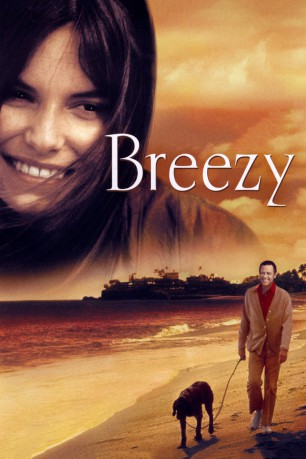

#4594 Breezy - Begegnung am Vormittag
Alternativ: Breezy
 
 IMDB-Wertung: 7.0 / 10
IMDB-Wertung: 7.0 / 10  Metascore: 0
Metascore: 0 
Auch nach mehr als drei Jahrzehnten hat dieser Film nichts von seiner Aktualität verloren. Er beschäftigt sich mit dem Alter, dem Fortschreiten von Zeit und der Liebe, die dabei auf der Strecke bleiben kann. Ein paar der Dialoge sind aus heutiger Sicht ein wenig gestelzt und auch die Handlung selbst ist gelegentlich vorhersehbar, aber dem steht ein Film von tiefer Weisheit gegenüber, der einem Rohdiamanten gleicht. Clint Eastwood hat ein ruhiges Drama inszeniert und lässt seinen Mimen die Freiheit, sich zu entfalten. Der Film ist ein selten gesehener Vertreter aus Eastwoods Gesamtwerk, das man nun Dank Koch Media wieder oder neu entdecken kann. Fazit: Ein schöner Film, mit einem Hauch von Traurigkeit
Jahr: 1973
Dauer: 106 Minuten
FSK: 6
Land: USA Studio: Universal PicturesTonspuren:
Untertitel:
Auflösung: 1080p (1920x1040) Größe: 8960 MB
Genre: Drama, Liebe
Regisseur:  Clint Eastwood
Clint Eastwood
Drehbuch: Tennessee Williams
Soundtrack:
Darsteller:
 William Holden als Frank Harmon
William Holden als Frank Harmon- Kay Lenz als Breezy
 Roger C. Carmel als Bob Henderson
Roger C. Carmel als Bob Henderson- Marj Dusay als Betty Tobin
- Jamie Smith-Jackson als Marcy
- Norman Bartold als Man in Car
- Lynn Borden als Overnight Date
- Shelley Morrison als Nancy Henderson
 Richard Bull als Doctor
Richard Bull als Doctor- Don Diamond als Maitre'D
- Sandy Kenyon als Real Estate Agent
 Clint Eastwood als Man at Marina , uncredited
Clint Eastwood als Man at Marina , uncredited- Joan Hotchkis als Paula Harmon
- Dennis Olivieri als Bruno
- Eugene Peterson als Charlie
- Lew Brown als Police Officer
- Johnnie Collins III als Norman
- Scott Holden als Veterinarian
- Jack Kosslyn als Driver
- Mary Munday als Waitress
- Frances Stevenson als Saleswoman
- Buck Young als Paula's Escort
- Priscilla Morrill als Dress Customer
- Earle als Sir Love-A-Lot
- Tom Bleecker als Man , uncredited
- Berniece Dalton als Rose Perry , uncredited
- Edwina Gist als Woman , uncredited
- Lee Holiday als Man at Party , uncredited
- Marilyn Jones als Waitress , uncredited
- Agnes Lloyd als Woman at Party , uncredited
- Susan Moudy als Waitress , uncredited
- Murray Pollack als Bill Perry , uncredited
- Earl Rivard als Cashier , uncredited
- Kevin Tate als Hitchhiker , uncredited
- Roxanne Tunis als Woman , uncredited
Datei: X:\1973\Breezy - Begegnung am Vormittag (1973, FSK6, 1920x1040).mkv seit 20.10.2016
Festplatte: HD 1971-1979
 Es gibt insgesamt 30 Filme in der Gruppe '1973'
Es gibt insgesamt 30 Filme in der Gruppe '1973'